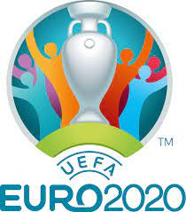
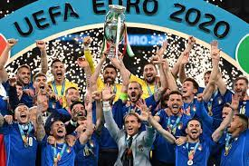
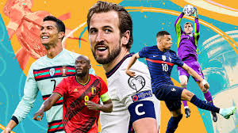

Neymar Jr.
A football player or footballer is a sportsperson who plays one of the different types of football.

Lionel Messi
A football player or footballer is a sportsperson who plays one of the different types of football.

Cristiano Ronaldo
A football player or footballer is a sportsperson who plays one of the different types of football.

Paulo Dybala
A football player or footballer is a sportsperson who plays one of the different types of football.

Mesut Ozil
A football player or footballer is a sportsperson who plays one of the different types of football.

Mauro Icardi
A football player or footballer is a sportsperson who plays one of the different types of football.

Di Maria
A football player or footballer is a sportsperson who plays one of the different types of football.

Kylian Mbappe
A football player or footballer is a sportsperson who plays one of the different types of football.

Mohamed Salah
A football player or footballer is a sportsperson who plays one of the different types of football.

Harry kane
A football player or footballer is a sportsperson who plays one of the different types of football.

Kevin De Bruyne
A football player or footballer is a sportsperson who plays one of the different types of football.

Philippe Coutinho
A football player or footballer is a sportsperson who plays one of the different types of football.
Euro 2020
Italy won their second European Championship title by beating England on penalties in the final following a 1–1 draw after extra time. ... Due to the COVID-19 pandemic in Europe during 2020, the tournament was postponed to summer 2021, while retaining the name UEFA Euro 2020 and host venues.
Watch Euro

Italy won their second European Championship title by beating England on penalties in the final following a 1–1 draw after extra time. ... Due to the COVID-19 pandemic in Europe during 2020, the tournament was postponed to summer 2021, while retaining the name UEFA Euro 2020 and host venues.
Watch Euro
